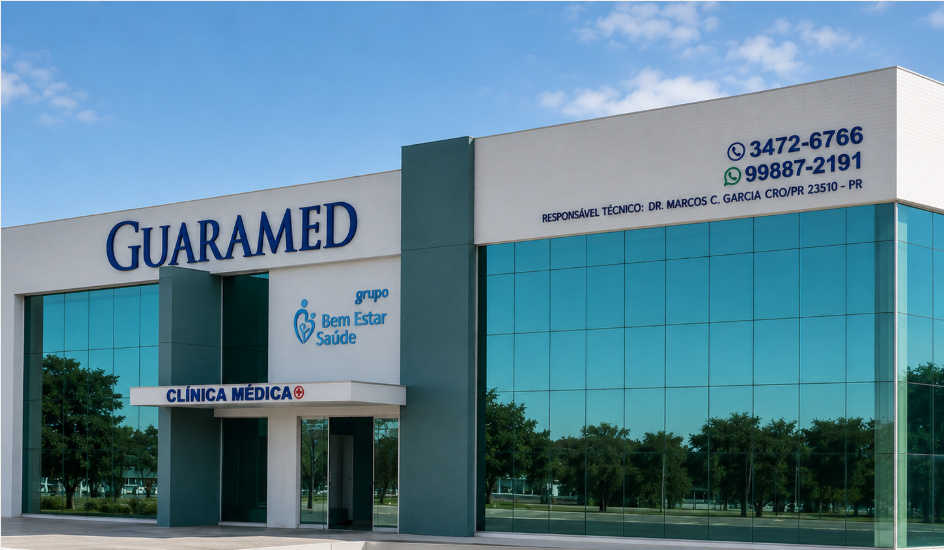

Na Guaramed, cada consulta começa com tempo para ouvir você. Diagnóstico cuidadoso, orientação clara e acompanhamento que vai além da receita.
Desde o acompanhamento preventivo até investigações diagnósticas, trabalhamos para o seu bem-estar em cada etapa da vida.
Valorizamos cada detalhe da sua experiência, do agendamento até o retorno.
Consultamos com tempo. Sem pressa, sem jargão. Explicamos cada passo do diagnóstico e do tratamento para que você entenda e decida com segurança.
Contamos com dois eletrocardiógrafos e monitor de pressão arterial. Exames realizados durante a própria consulta, sem precisar ir a outro local.
Sem filas, sem ligações longas. Envie uma mensagem e confirme sua consulta em minutos, no horário que melhor se encaixa na sua rotina.
Aceitamos o plano Amil e atendimento particular, tornando o acesso à saúde de qualidade mais acessível para toda a família em Guaratuba.
Foto profissional
Com registro ativo no CRM-PR e CRM-SC, o Dr. Marcos Carvalho Garcia é o responsável técnico da Guaramed desde sua fundação em 2018. Especializado em clínica médica e medicina de família, acredita que a melhor medicina começa pela escuta atenta e pelo vínculo de confiança com o paciente.
Sua abordagem integra o contexto de vida de cada paciente à investigação clínica criteriosa, trabalhando sempre para o melhor resultado possível em cada situação.
Do agendamento ao acompanhamento, um processo simples e transparente para que você se sinta seguro em cada etapa.
Experiências reais de atendimento — sem associação a diagnósticos ou resultados específicos.
"Médico muito atencioso, explicou tudo com clareza e sem pressa. A recepção foi ótima e o agendamento pelo WhatsApp foi super rápido. Recomendo!"
"Fui fazer um check-up e fiquei surpreso com a qualidade. Fizeram o eletrocardiograma ali mesmo e tudo ficou pronto na hora. Atendimento muito humano."
"Clínica muito organizada e acolhedora. O Dr. Marcos é extremamente dedicado, ouve tudo com atenção e passa muita confiança. Voltarei sempre."
Depoimentos de experiência de atendimento. Resultados individuais podem variar.
Separamos as principais dúvidas sobre atendimento, convênios e agendamento. Não encontrou o que procura? Fale conosco pelo WhatsApp.
Falar pelo WhatsAppAgende sua consulta com facilidade. Trabalhamos para oferecer o melhor cuidado para você e sua família em Guaratuba.